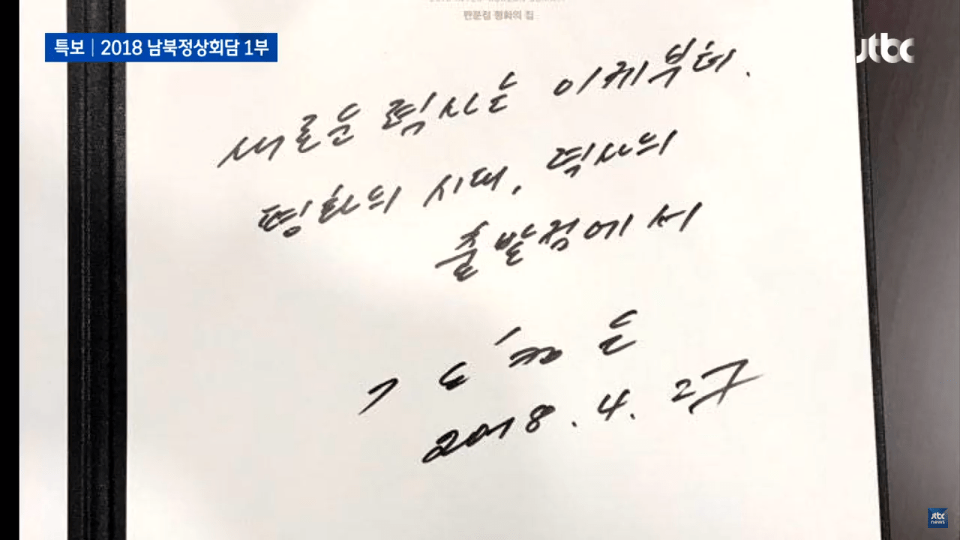
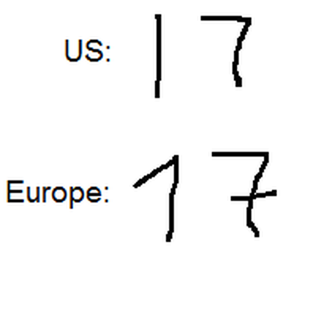
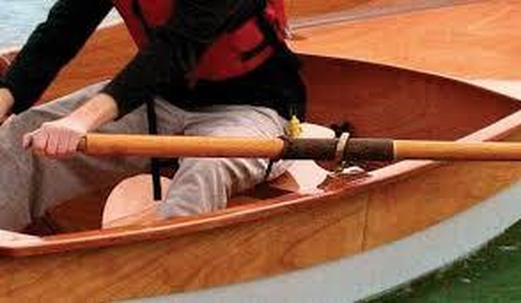
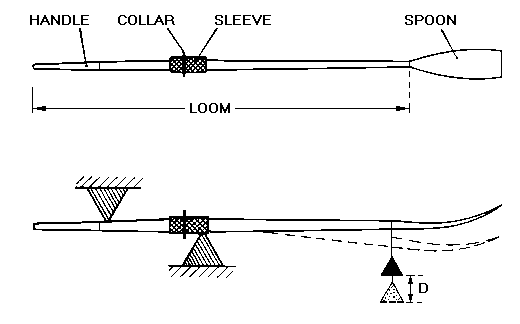
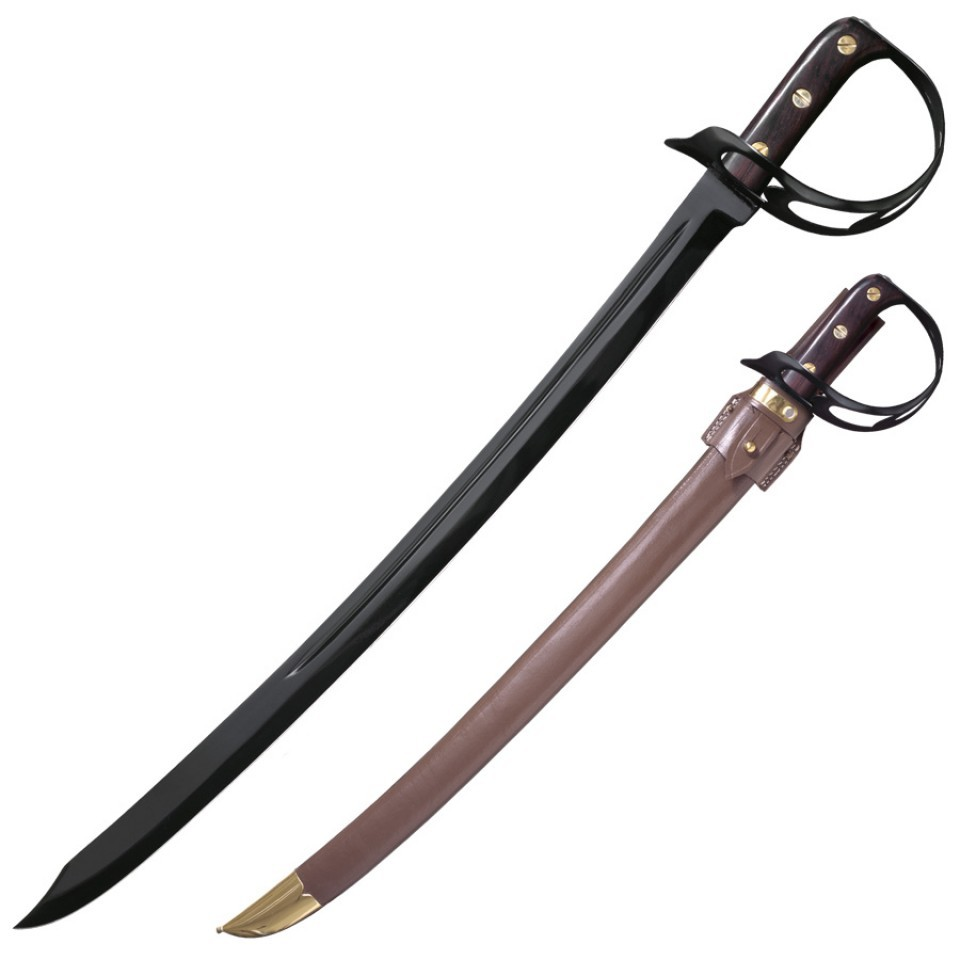

김정은의 숫자 7 - 영국과 유럽대륙의 표기 차이
게시: 2018-04-28T11:22:22+09:00

어제 김정은의 방명록에서 숫자 7을 쓴 방식이 화제가 되었습니다. 주로 영국과 미국에서는 7을 쓸 때 가로 획을 긋지 않지만 유럽 대륙에서는 대부분 긋는다고 합니다. 이는 1이라는 숫자 윗머리에 serif를 넣느냐 안 넣느냐의 차이 때문에 1과 헷갈리는 것을 막기 위한 것입니다. 또 같은 영미권이라도 호주 뉴질랜드에서는 긋는 쪽이 더 많다고 합니다. 세계화 시대인 요즘은 어느 나라냐의 구분없이 섞어 쓰는 경우가 많습니다. 한 페친께서는 미해군에서도 7에 가로획을 긋도록 교육받는다고 말씀하시네요. 그래도 우리나라나 일본에서는 저렇게 쓰는 경우는 아직 많지 않지요. 아무튼 김정은이 스위스에서 학창 시절을 보냈다더니 저런 글씨체를 배워온 모양입니다. 부디 저것 말고도 전쟁보다는 평화가, 핵폭탄보다는 철도가 더 좋은 것이라는 것을 배워왔기를 빕니다.

저는 김정은 글씨를 보자마자 전에 읽었던 아래 소설 구절이 생각났습니다. 나폴레옹 전쟁 당시, 바로 저 7자를 쓰는 방식 때문에 영국 항구에 침투한 프랑스 해군의 존재를 간파하는 부분입니다. 주인공인 혼블로워 함장은 거의 셜록 홈즈 수준의 관찰력과 추리력을 보여줍니다. 이 소설 속에서도 주인공은 스스로 '7이라는 숫자에 그어진 가로획 하나 때문에 이 난리를 피우는 것이 과연 옳은가?'라고 스스로 망설이긴 합니다. 그 부분만 짧게 보시지요.
Hornblower and the Atropos by C.S. Forester (배경 : 1806년 영국 다운즈(Downs) 군항 내 영국 소형 슬룹함 아트로포스(HMS Atropos) 함상)
혼블로워는 존스 부관이 함내 재정비를 할 시간을 주기 위해 돌아 섰다. 그는 추위로 굳어버린 몸에 활기를 불어넣기 위해 갑판을 좀 걷기 시작했다. 그의 회중시계가 아직 손에 쥐여 있는 것은 그걸 주머니에 집어넣는 것을 그저 깜빡 잊었기 때문이었다. 그는 슬룹(sloop) 함의 옆을 걷다가 멈추고 검은 바다 위를 쳐다 보았다. 배 옆으로 떠내려가는 뭔가가 있었다. 뭔가 길고 검은 물체였다. 혼블로워가 그것을 처음 보았을 때 그 물체는 배의 주돛대 고정판(main chains) 밑 부분에 한쪽 끝을 퉁하고 부딪혔고, 그가 보는 동안 조수의 흐름에 따라 엄숙하게 빙그르 돌아 그가 서있는 곳으로 떠내려 왔다. 그건 노였다. 궁금증이 그를 사로잡았다. 이렇게 선박들로 가득찬 기항지에 노 하나가 떠다니는 것은 별로 놀랄 일은 아니었다. 하지만 -
"이봐, 조타수 !" 혼블로워가 외쳤다. "밧줄을 들고 뒷돛대 고정판(mizen chains)으로 내려가서 저 노를 건져와 !" (역주 : quartermaster는 조타수로서 원래 키를 맡습니다만, 기항지에서는 현문(gangway, 앞갑판과 뒷갑판 사이의 연결통로)을 책임지는 임무를 맡습니다. 나폴레옹 전쟁 당시 해양 분야에 대한 C.S. Forester의 웅대한 지식에 의문을 갖지 마셔야 합니다.)

(Main chains에 수심 측정원이 올라탄 모습입니다. Main chains는 쇠사슬뭉치가 아니라 shroud, 즉 주돛대(main mast)를 뱃전에 묶는 밧줄들인 지삭(支索)을 고정시키는 판을 말합니다. 뒷돛대가 mizen mast니까 뒷돛대를 묶는 지삭을 위한 고정판은 mizen chains입니다.)
그건 그냥 노였다. 조타수가 들고 있는 노를 그는 자세히 들여다 보았다. 노 허리의 가죽 멈치(leather button)은 꽤 닳은 상태였다. 절대 새 노는 아니었다. 하지만 가죽이 완전히 물에 푹 젖은 상태가 아닌 것으로 보아, 바닷물 속에 며칠 동안 있었다기 보다는 분명히 그냥 몇 분 정도 있었던 것으로 보였다. 노 자루(loom)에는 27이라는 번호가 달군 쇠로 낙인 찍혀 있었는데, 그 부분이 혼블로워로 하여금 더 자세히 검사해보도록 만든 주범이었다. 7이라는 숫자에 가로획이 그어져 있었던 것이다. 영국인들은 7자를 쓸 때 가로획을 긋지 않았다. 유럽 대륙 사람들은 모두들 그었다. 바다에는 덴마크인, 스웨덴인, 노르웨이인, 러시아인, 프로이센인 등이 있었고, 영국의 동맹국이거나 중립국이었다. 하지만 프랑스인이나 네덜란드인들은 영국의 적국이었고 7을 그런 식으로 썼다.


(앵글로색슨은 기본적으로 해양전투민족이라 어휘에도 해양 관련 단어가 복잡하게 많습니다. 가령 button이나 loom에 대해 한영 사전에는 정확히 대응되는 단어가 없는 모양입니다. 이 그림에서는 button 대신 collar라는 단어를 썼는데, button이나 collar는 노 중간에 두툼하게 묶어놓는 것으로서, 노가 뱃전의 노걸이를 넘어 빠지지 않도록 하는 역할을 합니다. 그래서 저는 멈치라는 단어를 그냥 제 맘대로 만들어 썼습니다.)
게다가 뭔가 총소리 같은 것이 분명히 들린 것 같았다. 떠다니는 노 한 자루와 머스켓 총성 한 방은 뭔가 설명하기 어려운 조합을 만들어냈다. 이들이 만약 뭔가 인과관계로 맺어져 있다면 ! 혼블로워는 아직도 회중시계를 손에 쥐고 있었다. 그 총성은 - 만약 그게 정말 총성이었다면 - 그가 '쉬어' 명령을 내리기 직전, 그러니까 7~8분 전에 들렸다. 조수는 약 2노트 (1노트는 1.85 km/h)의 속도로 흐르고 있었다. 만약 그 총성으로 인해 노가 바다에 떨어진 것이라면 그 총격은 조수 흐름 상류 쪽 1/4 마일 (1마일은 1.6km) 거리에서 일어난 것이었고, 그건 배에서 쓰는 단위로 두 케이블 길이에 불과했다. 아직도 노를 들고 있던 조타수는 뭐 때문에 저러시나 하는 궁금해하는 표정으로 그를 쳐다 보았고, 연습 중이던 수병들을 대기 상태로 둔 채 존스 부관이 옆에서 다음 명령을 기다리고 있었다. 혼블로워는 이 사소한 해프닝에 대해 더 신경 쓰지 않는 것이 좋겠다는 유혹을 느꼈다.
하지만 그는 국왕의 장교였고, 바다에서 설명할 수 없는 일에 대해서는 조사를 하는 것이 그의 의무였다. 그는 자기 자신과 내적 토론을 하며 주저했다. 안개가 끔찍하게 짙었다. 조사를 위해 보트를 보낸다면 아마 길을 잃을 수도 있었다. 혼블로워 자신은 안개가 가득한 항구에서 보트로 길을 찾아가는 경험이 많았다. 그러니 자신이 가면 되는 일이었다. 그는 안개 속에서 길을 찾다 실수를 할 수도 있다는 생각에 불안했다. 부하들 앞에서 망신을 당할 수도 있었다. 하지만 한편으로 생각해보니 꾸물거리며 돌아오지 않는 보트를 함상에서 기다리며 안절부절하는 것보다는 그게 차라리 더 나을 것 같았다.
"미스터 존스," 그는 말했다. "내 긱(gig) 보트를 내리게." (역주 : 군함에 실린 작은 보트를 gig이라고 부릅니다.)
"예, 함장님." 존스의 대답 속에는 깜짝 놀랐다는 것이 거의 그대로 드러나 있었다.
혼블로워는 나침반대(binnacle)로 걸어가 선수 방향을 주의깊게 읽었다. 그렇게 최대한 조심스럽게 방향을 읽은 것은 그의 안전 때문이라기 보다는 그의 권위가 길을 제대로 찾는 것에 달려 있기 떄문이었다. 북동동 방향이었다. 배는 조수 방향으로 함수를 향한 채 닻을 내리고 있었으므로 그는 노가 그 쪽 방향에서 떠내려 왔다고 확신할 수 있었다.
"긱 보트에 좋은 나침반을 실어주게, 미스터 존스."
"예, 함장님."
혼블로워는 마지막 명령을 내리기 전에 잠시 망설였다. 명령을 내린다는 것은 안개 속 어딘가에 뭔가 심각한 상황이 벌어지고 있을 확률이 높다고 자신이 생각한다는 것을 공공연하게 알리는 것이기 때문이었다. 하지만 명령을 내리지 않는다면 그건 '하루살이는 걸러 내고 낙타는 삼키는' 모양새였다. (역주 : strain at a gnat and swallow a camel, 마태복음 23장 24절) 만약 그가 들은 것이 정말 머스켓 총성이었다면 적대 행위가 벌어지고 있을 가능성이 있었고, 최소한 병력 파견이 필요할 수도 있는 상황이었다.
"긱 보트 승조원에게 권총과 검(cutlass)을 지급하게, 미스터 존스."
"예, 함장님." 존스는 이제 뭐가 더 놀랍겠냐는 듯 대답했다.
혼블로워는 보트로 내려가기 위해 돌아섰다.
"이제부터 시간을 잴 걸세, 미스터 존스. 저 탑세일(역주 : tops'l. 돛대 맨 꼭대기에 펼쳐지는 돛) 가로대를 지금부터 30분 안에 걷어들이도록 하게. 그 전에 돌아올테니까 말일세."
"예, 함장님."

(수병용 군도인 cutlass 입니다.)